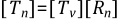

If the rotations are large but the mechanical strains (those that cause stresses) are small, then a large-rotation procedure can be used.
A large-rotation analysis is performed in a static (ANTYPE,STATIC) or transient (ANTYPE,TRANS) analysis while flagging large deformations (NLGEOM,ON) when the appropriate element type is used.
All large-strain elements also support this capability, as both options account for the large rotations and for small strains, the logarithmic strain measure and the engineering strain measure coincide.
Large Strain presented the theory for general motion of a material point. Large-rotation theory follows a similar development, except that the logarithmic strain measure (Equation 3–6) is replaced by the Biot, or small (engineering) strain measure:
(3–36) |
where:
| [U] = stretch matrix |
| [I] = 3 x 3 identity matrix |
A corotational (or convected coordinate) approach is used in solving large-rotation/small-strain problems (Rankin and Brogan([66])). "Corotational" may be thought of as "rotated with". The nonlinearities are contained in the strain-displacement relationship which for this algorithm takes on the special form:
 | (3–37) |
where:
| [Bv] = usual small strain-displacement relationship in the original (virgin) element coordinate system |
| [Tn] = orthogonal transformation relating the original element coordinates to the convected (or rotated) element coordinates |
The convected element coordinate frame differs from the original element coordinate frame by the amount of rigid body rotation. Hence [Tn] is computed by separating the rigid body rotation from the total deformation {un} using the polar decomposition theorem, Equation 3–5. From Equation 3–37, the element tangent stiffness matrix has the form:
(3–38) |
and the element restoring force is:
(3–39) |
where the elastic strain is computed from:
(3–40) |
 is the element deformation which causes
straining as described in a subsequent subsection.
is the element deformation which causes
straining as described in a subsequent subsection.
The large-rotation process can be summarized as a three step process for each element:
Determine the updated transformation matrix [Tn] for the element.
Extract the deformational displacement from the total element displacement {un} for computing the stresses as well as the restoring force .
After the rotational increments in {Δu} are computed, update the node rotations appropriately. All three steps require the concept of a rotational pseudovector in order to be efficiently implemented (Rankin and Brogan([66]), Argyris([67])).
The updated transformation matrix [Tn] relates the current element coordinate system to the global Cartesian coordinate system as shown in Figure 3.3: Element Transformation Definitions.
[Tn] can be computed directly or the rotation of the element coordinate system [Rn] can be computed and related to [Tn] by
 | (3–41) |
where [Tv] is the original transformation matrix. The determination of [Tn] is unique to the type of element involved, whether it is a solid element, shell element, beam element, or spar element.
| Solid Elements. The rotation matrix [Rn] for these elements is extracted from the displacement field using the deformation gradient coupled with the polar decomposition theorem (see Malvern([87])). |
| Shell Elements. The updated normal direction (element z direction) is computed directly from the updated coordinates. The computation of the element normal is given in Element Library for each particular shell element. The extraction procedure outlined for solid elements is used coupled with the information on the normal direction to compute the rotation matrix [Rn]. |
| Beam Elements. The nodal rotation increments from {Δu} are averaged to determine the average rotation of the element. The updated average element rotation and then the rotation matrix [Rn] is computed using Rankin and Brogan([66]). In special cases where the average rotation of the element computed in the above way differs significantly from the average rotation of the element computed from nodal translations, the quality of the results will be degraded. |
| Link Elements. The updated transformation [Tn] is computed directly from the updated coordinates. |
| Generalized Mass Element (MASS21). The nodal rotation increment from {Δu} is used to update the element rotation which then yields the rotation matrix [Rn]. |
The displacement field can be decomposed into a rigid body translation, a rigid body rotation, and a component which causes strains:
(3–42) |
where:
| {ur} = rigid body motion |
| {ud} = deformational displacements which cause strains |
{ud} contains both translational as well as rotational degrees of freedom.
The translational component of the deformational displacement can be extracted from the displacement field by
(3–43) |
where:
| = translational component of the deformational displacement |
| [Rn] = current element rotation matrix |
| {xv} = original element coordinates in the global coordinate system |
| {u} = element displacement vector in global coordinates |
{ud} is in the global coordinate system.
For elements with rotational DOFs, the rotational components of the deformational displacement must be computed. The rotational components are extracted by essentially “subtracting” the nodal rotations {u} from the element rotation given by {ur}. In terms of the pseudovectors this operation is performed as follows for each node:
Compute a transformation matrix from the nodal pseudovector {θn} yielding [Tn].
Compute the relative rotation [Td] between [Rn] and [Tn]:
(3–44)
This relative rotation contains the rotational deformations of that node as shown in Figure 3.4: Definition of Deformational Rotations.
Extract the nodal rotational deformations {ud} from [Td].
Because of the definition of the pseudovector, the deformational rotations extracted in step 3 are limited to less than 30°, since 2sin(θ /2) no longer approximates θ itself above 30°. This limitation only applies to the rotational distortion (i.e., bending) within a single element.
Once the transformation [T] and deformational displacements {ud} are determined, the element matrices Equation 3–38 and restoring force Equation 3–39 can be determined. The solution of the system of equations yields a displacement increment {Δu}. The nodal rotations at the element level are updated with the rotational components of {Δu}. The global rotations (in the output and on the results file) are not updated with the pseudovector approach, but are simply added to the previous rotation in {un-1}.
The large-rotation computations in those elements which support it are activated by the large-deformation key (NLGEOM,ON). Stress stiffening is also be included and contributes to the tangent stiffness matrix (which may be required for structures weak in bending resistance).
Stresses (output as S) are engineering stresses in the rotated element coordinate system (the element coordinate system follows the material as it rotates). Strains (output as EPEL, EPPL, etc.) are engineering strains, also in the rotated element coordinate system. This applies to element types that do not have large-strain capability. For element types that have large-strain capability, see Large Strain.
It has been found in many situations that the use of consistent tangent stiffness in a nonlinear analysis can speed up the rate of convergence greatly. It normally results in a quadratic rate of convergence. A consistent tangent stiffness matrix is derived from the discretized finite element equilibrium equations without the introduction of various approximations. The terminology of finite rotation in the context of geometrical nonlinearity implies that rotations can be arbitrarily large and can be updated accurately. A consistent tangent stiffness accounting for finite rotations derived by Nour-Omid and Rankin([176]) for beam/shell elements is used. The technology of consistent tangent matrix and finite rotation makes the buckling and postbuckling analysis a relatively easy task. The theory of finite rotation representation and update has been described in Large Rotation using a pseudovector representation. The following will outline the derivations of a consistent tangent stiffness matrix used for the corotational approach.
The nonlinear static finite element equations solved can be characterized by at the element level by:
(3–45) |
where:
| N = number of total elements |
 = element internal force
vector in the element coordinate system, generally see Equation 3–46 = element internal force
vector in the element coordinate system, generally see Equation 3–46 |
| [Tn]T = transform matrix transferring the local internal force vector into the global coordinate system |
| = applied load vector at the element level in the global coordinate system |
(3–46) |
Hereafter, we shall focus on the derivation of the consistent tangent matrix at the element level without introducing an approximation. The consistent tangent matrix is obtained by differentiating Equation 3–45 with respect to displacement variables {ue}:
(3–47) |
It can be seen that Part I is the main tangent matrix Equation 3–38 and Part II is the stress stiffening
matrix (Equation 3–34, Equation 3–61 or Equation 3–64). Part III is another part of
the stress stiffening matrix (see Nour-Omid and Rankin([176])) traditionally neglected in the past. However,
many numerical experiments have shown that Part III of
is essential to the faster rate of convergence.
In some cases, Part III of
 is unsymmetric; when this occurs,
a procedure of symmetrizing
is unsymmetric; when this occurs,
a procedure of symmetrizing
 is invoked.
is invoked.
As Part III of the consistent tangent matrix utilizes the internal
force vector
 to form the matrix, it
is required that the internal vector
not be so large as to dominate
the main tangent matrix (Part I). This can normally be guaranteed
if the realistic material and geometry are used, that is, the element
is not used as a rigid link and the actual thicknesses are input.
to form the matrix, it
is required that the internal vector
not be so large as to dominate
the main tangent matrix (Part I). This can normally be guaranteed
if the realistic material and geometry are used, that is, the element
is not used as a rigid link and the actual thicknesses are input.
It is also noted that the consistent tangent matrix Equation 3–47 is very suitable for use with the arc-length solution method.